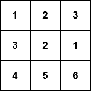
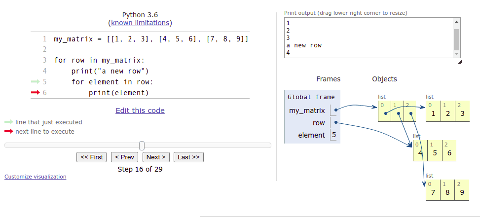
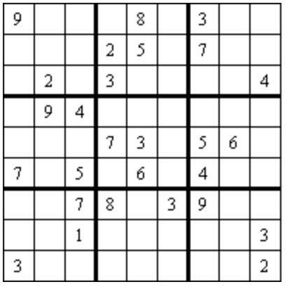

Més llistes
Objectius d’aprenentatge
- Seràs capaç de crear llistes amb diferents tipus d'elements
- Sabràs utilitzar llistes per organitzar dades
- Seràs capaç d'emmagatzemar una matriu com a llista bidimensional
Llistes amb diferents tipus de dades
En la part anterior vam treballar principalment amb llistes d'enters, però qualsevol tipus de valors es pot emmagatzemar en llistes. Una llista de cadenes de text podria ser així:
noms = ["Marta", "Ruth", "Pau"]
print(noms)
noms.append("David")
print(noms)
print("Nombre de noms a la llista:", len(noms))
print("Noms en ordre alfabètic:")
noms.sort()
for nom in noms:
print(nom)['Marta', 'Ruth', 'Pau'] ['Marta', 'Ruth', 'Pau', 'David'] Nombre de noms a la llista: 4 Noms en ordre alfabètic: David Marta Pau Ruth
Els nombres de punt flotant també són elements vàlids per a les llistes:
mesures = [-2.5, 1.1, 7.5, 14.6, 21.0, 19.2]
for mesura in mesures:
print(mesura)
mitjana = sum(mesures) / len(mesures)
print("La mitjana és:", mitjana)-2.5 1.1 7.5 14.6 21.0 19.2 La mitjana és: 10.15
Advertència: sobreescriure un paràmetre i retornar massa aviat
Hi ha un parell de fonts noves d'errors que hauríem de mirar abans de saltar als exercicis d'aquesta part. Vegem una funció que ens diu si un enter es troba dins d'una llista. Tots dos es defineixen com a paràmetres de la funció:
def nombre_a_llista(nombres: list, nombre: int):
for nombre in nombres:
if nombre == nombre:
return True
else:
return FalseAquesta funció sembla retornar sempre True. La raó és que el bucle for sobreescriu el valor emmagatzemat al paràmetre nombre. Així la condició en la sentència if sempre és certa.
Canviar el nom del paràmetre resol el problema:
def nombre_a_llista(nombres: list, nombre_cercat: int):
for nombre in nombres:
if nombre == nombre_cercat:
return True
else:
return FalseAra la condició en la sentència if sembla millor. Però hi ha un nou problema, ja que la funció encara no sembla funcionar correctament. Provar el següent manifesta un error:
trobat = nombre_a_llista([1, 2, 3, 4], 3)
print(trobat) # imprimeix FalseEl problema aquí és que la funció retorna massa aviat, sense comprovar tots els nombres de la llista. De fet, la funció només agafa el primer element de la llista, i retorna True o False depenent del seu valor. No podem saber si un nombre no està present a la llista fins que no hem comprovat tots els elements de la llista. La comanda return False s'ha de col·locar fora del bucle for:
def nombre_a_llista(nombres: list, nombre_cercat: int):
for nombre in nombres:
if nombre == nombre_cercat:
return True
return FalseVegem una altra funció defectuosa:
def nombres_unics(nombres: list):
# una variable auxiliar per emmagatzemar tots els nombres que ja hem comprovat
nombres = []
for nombre in nombres:
# hem vist aquest nombre ja?
if nombre in nombres:
return False
nombres.append(nombre)
return True
unic = nombres_unics([1, 2, 2])
print(unic) # imprimeix TrueAquesta funció hauria de comprovar si tots els nombres d'una llista són diferents entre si, però sempre retorna True.
Aquí la funció sobreescriu de nou el valor emmagatzemat al seu paràmetre per error. La funció intenta utilitzar la variable nombres per emmagatzemar tots els nombres ja comprovats, però això sobreescriu la llista d'arguments original. Canviar el nom de la variable auxiliar és una solució fàcil:
def nombres_unics(nombres: list):
# una variable auxiliar per emmagatzemar tots els nombres que ja hem comprovat
nombres_comprovats = []
for nombre in nombres:
# hem vist aquest nombre ja?
if nombre in nombres_comprovats:
return False
nombres_comprovats.append(nombre)
return True
unic = nombres_unics([1, 2, 2])
print(unic) # imprimeix FalseProblemes com aquest, i molts altres, es poden localitzar i arreglar amb l'ajuda del depurador o l'eina de visualització. Aprendre a utilitzar aquestes eficientment no es pot emfatitzar prou.
Exercici: La cadena més llarga
Escriu una funció anomenada mes_llarga(cadenes: list), que rep una llista de cadenes de text com a argument. La funció troba i retorna la cadena més llarga de la llista. Pots assumir que sempre hi ha una única cadena més llarga a la llista.
Exemple de comportament esperat:
if __name__ == "__main__":
cadenes = ["hola", "hola!", "hello", "howdydoody", "hola tu"]
print(mes_llarga(cadenes))howdydoody
Llistes dins de llistes
Els elements d'una llista poden ser llistes elles mateixes:
la_meva_llista = [[5, 2, 3], [4, 1], [2, 2, 5, 1]]
print(la_meva_llista)
print(la_meva_llista[1])
print(la_meva_llista[1][0])[[5, 2, 3], [4, 1], [2, 2, 5, 1]] [4, 1] 4
Per què serien útils les llistes dins de llistes?
Recorda que les llistes poden contenir elements de diferents tipus. Podries emmagatzemar informació sobre una persona en una llista. Per exemple, podries incloure el seu nom com a primer element, la seva edat com a segon element i la seva alçada en metres com a tercer element:
["Anna", 12, 1.45]Una base de dades de persones podria ser llavors una llista, els elements de la qual serien llistes que contenen informació sobre una sola persona:
persones = [["Bet", 10, 1.37], ["Pere", 7, 1.25], ["Emília", 32, 1.64], ["Alan", 39, 1.78]]
for persona in persones:
nom = persona[0]
edat = persona[1]
alçada = persona[2]
print(f"{nom}: edat {edat} anys, alçada {alçada} metres")Bet: edat 10 anys, alçada 1.37 metres Pere: edat 7 anys, alçada 1.25 metres Emília: edat 32 anys, alçada 1.64 metres Alan: edat 39 anys, alçada 1.78 metres
El bucle for passa pels elements de la llista exterior un per un. És a dir, cada llista que conté informació sobre una sola persona s'assigna, al seu torn, a la variable persona.
Les llistes no sempre són la millor manera de presentar dades, com la informació sobre una persona. Aviat ens trobarem amb els diccionaris de Python, que sovint són més adequats per a aquestes situacions.
Matrius
Una matriu bidimensional, o simplement una matriu, també és una aplicació natural d'una llista dins d'una llista.
Per exemple, la següent matriu

es podria presentar com una llista bidimensional en Python així:
la_meva_matriu = [[1, 2, 3], [3, 2, 1], [4, 5, 6]]Com que una matriu és una llista que conté llistes, els elements individuals dins de la matriu es poden accedir utilitzant claudàtors consecutius. El primer índex es refereix a la fila, i el segon a la columna. La indexació comença des de zero, així per exemple la_meva_matriu[0][1] es refereix al segon element de la primera fila.
la_meva_matriu = [[1, 2, 3], [3, 2, 1], [4, 5, 6]]
print(la_meva_matriu[0][1])
la_meva_matriu[1][0] = 10
print(la_meva_matriu)2 [[1, 2, 3], [10, 2, 1], [4, 5, 6]]
Com qualsevol altra llista, les files de la matriu es poden recórrer amb un bucle for. El codi següent imprimeix cada fila de la matriu en una línia separada:
la_meva_matriu = [[1, 2, 3], [4, 5, 6], [7, 8, 9]]
for fila in la_meva_matriu:
print(fila)[1, 2, 3] [4, 5, 6] [7, 8, 9]
De la mateixa manera, es poden utilitzar bucles niats per accedir als elements individuals. El codi següent imprimeix cada element de la matriu en una línia separada amb l'ajuda de dos bucles for:
la_meva_matriu = [[1, 2, 3], [4, 5, 6], [7, 8, 9]]
for fila in la_meva_matriu:
print("una nova fila")
for element in fila:
print(element)una nova fila 1 2 3 una nova fila 4 5 6 una nova fila 7 8 9
Visualització de codi que conté llistes dins de llistes
Els programes que contenen llistes dins de llistes poden semblar difícils d'entendre al principi. L'eina de visualització de Python Tutor és d'una gran ajuda per entendre com funcionen. La següent és una visualització de l'exemple anterior:

La imatge anterior revela que una matriu de 3 per 3 tècnicament consisteix en quatre llistes. La primera llista representa tota la matriu. Les tres llistes restants són elements de la primera llista, i representen les files.
Com que les llistes multidimensionals es poden recórrer amb bucles niats, seria natural pensar que les llistes en si mateixes estan niades, però la imatge anterior ens mostra que en realitat no és així. En lloc d'això, la llista que representa tota la matriu "apunta" a cada llista individual que representa una fila a la matriu. Això s'anomena una referència, i a la següent secció s'explorarà més a fons la idea.
A la imatge anterior l'execució ha progressat a la segona fila de la matriu, i aquesta llista és a la qual la variable fila actualment es refereix. La variable element conté l'element en què l'execució es troba actualment. El valor emmagatzemat a element és l'element del mig a la llista, és a dir, 5.
Accedir a elements en una matriu
Accedir a una sola fila dins d'una matriu és simple - només cal triar la fila desitjada. La següent funció calcula la suma dels elements en una fila triada:
def suma_fila(la_meva_matriu, numero_fila: int):
# tria la fila desitjada dins de la matriu
fila = la_meva_matriu[numero_fila]
suma_fila = 0
for element in fila:
suma_fila += element
return suma_fila
m = [[4, 2, 3, 2], [9, 1, 12, 11], [7, 8, 9, 5], [2, 9, 15, 1]]
la_meva_suma = suma_fila(m, 1)
print(la_meva_suma) # imprimeix 33 (que equival a 9 + 1 + 12 + 11)Treballar amb columnes dins d'una matriu és una mica més complicat, ja que la matriu s'emmagatzema per files:
def suma_columna(la_meva_matriu, numero_columna: int):
# passa per cada fila i selecciona l'element a la posició triada
suma_columna = 0
for fila in la_meva_matriu:
suma_columna += fila[numero_columna]
return suma_columna
m = [[4, 2, 3, 2], [9, 1, 12, 11], [7, 8, 9, 5], [2, 9, 15, 1]]
la_meva_suma = suma_columna(m, 2)
print(la_meva_suma) # imprimeix 39 (que equival a 3 + 12 + 9 + 15)La columna tractada aquí consisteix en els elements a l'índex 2 en cada fila.
L'eina de visualització és recomanable per entendre com funcionen aquestes funcions.
Canviar el valor d'un sol element dins de la matriu és simple: tria una fila dins de la matriu, i després una columna dins de la fila:
def canviar_valor(la_meva_matriu, numero_fila: int, numero_columna: int, nou_valor: int):
# tria la fila desitjada
fila = la_meva_matriu[numero_fila]
# selecciona l'element correcte dins de la fila
fila[numero_columna] = nou_valor
m = [[4, 2, 3, 2], [9, 1, 12, 11], [7, 8, 9, 5], [2, 9, 15, 1]]
print(m)
canviar_valor(m, 2, 3, 1000)
print(m)[[4, 2, 3, 2], [9, 1, 12, 11], [7, 8, 9, 5], [2, 9, 15, 1]] [[4, 2, 3, 2], [9, 1, 12, 11], [7, 8, 9, 1000], [2, 9, 15, 1]]
Nota com a dalt vam utilitzar els índexs de la fila i la columna per accedir a un element triat. Si volem canviar el contingut de la matriu, hem d'accedir als elements pels seus índexs. Això vol dir que no podem utilitzar un simple bucle for element in llista per recórrer la matriu si volem canviar el contingut de la matriu.
En lloc d'això, haurem de seguir la pista dels índexs dels elements, per exemple amb un bucle while, o un bucle for utilitzant la funció range. El codi següent augmenta el valor de cada element a la matriu en u:
m = [[1,2,3], [4,5,6], [7,8,9]]
for i in range(len(m)): # utilitzant el nombre de files a la matriu
for j in range(len(m[i])): # utilitzant el nombre d'elements a cada fila
m[i][j] += 1
print(m)[[2, 3, 4], [5, 6, 7], [8, 9, 10]]
El bucle exterior passa pels índexs des de zero a la llargada de la matriu, és a dir, el nombre de files a la matriu. El bucle interior passa pels índexs des de zero a la llargada de cada fila dins de la matriu.
Exercici: Nombre d'elements coincidents
Escriu una funció anomenada comptar_elements_coincidents(la_meva_matriu: list, element: int), que rep una matriu bidimensional d'enters i un sol valor enter com a arguments. La funció llavors compta quants elements dins de la matriu coincideixen amb el valor de l'argument.
Exemple de com hauria de funcionar la funció:
m = [[1, 2, 1], [0, 3, 4], [1, 0, 0]]
print(comptar_elements_coincidents(m, 1))3
Una matriu bidimensional com a estructura de dades en un joc
Una matriu pot ser una estructura de dades molt útil en molts jocs diferents. Per exemple, la graella d'un joc de sudoku a la imatge de sota

es pot representar en forma de matriu així:
sudoku = [
[9, 0, 0, 0, 8, 0, 3, 0, 0],
[0, 0, 0, 2, 5, 0, 7, 0, 0],
[0, 2, 0, 3, 0, 0, 0, 0, 4],
[0, 9, 4, 0, 0, 0, 0, 0, 0],
[0, 0, 0, 7, 3, 0, 5, 6, 0],
[7, 0, 5, 0, 6, 0, 4, 0, 0],
[0, 0, 7, 8, 0, 3, 9, 0, 0],
[0, 0, 1, 0, 0, 0, 0, 0, 3],
[3, 0, 0, 0, 0, 0, 0, 0, 2]
]Aquí el valor zero representa un quadrat buit, ja que zero no és un valor acceptable en un trencaclosques de sudoku acabat.
Aquí hi ha una funció simple per imprimir la graella de sudoku anterior:
def imprimir_graella(sudoku):
for fila in sudoku:
for quadrat in fila:
if quadrat > 0:
print(f" {quadrat}", end="")
else:
print(" _", end="")
print()
imprimir_graella(sudoku)La impressió hauria de ser així:
9 _ _ _ 8 _ 3 _ _ _ _ _ 2 5 _ 7 _ _ _ 2 _ 3 _ _ _ _ 4 _ 9 4 _ _ _ _ _ _ _ _ _ 7 3 _ 5 6 _ 7 _ 5 _ 6 _ 4 _ _ _ _ 7 8 _ 3 9 _ _ _ _ 1 _ _ _ _ _ 3 3 _ _ _ _ _ _ _ 2
Qualsevol joc comú amb una disposició de tauler de joc es pot modelar de manera similar. Entre d'altres, els escacs, el Buscamines, el Joc dels vaixells o el Mastermind es basen tots en una graella bidimensional. Per al sudoku, és natural utilitzar nombres per representar l'estat del joc, però per a altres jocs, poden ser millors mètodes diferents.
Exercici: Go
En un joc de Go dos jugadors es tornen per col·locar pedres negres i blanques en un tauler de joc. El guanyador és el jugador que aconsegueix envoltar una àrea més gran al tauler amb les seves pròpies peces de joc.
Escriu una funció anomenada qui_ha_guanyat(tauler_joc: list), que rep una matriu bidimensional com a argument. La matriu consisteix en valors enters, que representen les situacions següents:
- 0: quadrat buit
- 1: peça de joc del jugador 1
- 2: peça de joc del jugador 2
Les regles de puntuació del Go poden ser bastant complexes, però en aquest exercici n'hi ha prou amb comparar el nombre de peces que cada jugador té al tauler de joc. A més, la mida del tauler de joc no està limitada.
La funció ha de retornar el valor 1 si el jugador 1 ha guanyat, i el valor 2 si el jugador 2 ha guanyat. Si tots dos jugadors tenen el mateix nombre de peces al tauler, la funció ha de retornar el valor 0.
Exercici: Sudoku: comprovar fila
Escriu una funció anomenada fila_correcta(sudoku: list, numero_fila: int), que rep una matriu bidimensional que representa una graella de sudoku, i un enter que es refereix a una sola fila, com a arguments. Les files s'indexen des de 0.
La funció ha de retornar True o False, depenent de si la fila està omplerta correctament, és a dir, si conté cadascun dels nombres 1 a 9 com a màxim una vegada.
sudoku = [
[9, 0, 0, 0, 8, 0, 3, 0, 0],
[2, 0, 0, 2, 5, 0, 7, 0, 0],
[0, 2, 0, 3, 0, 0, 0, 0, 4],
[2, 9, 4, 0, 0, 0, 0, 0, 0],
[0, 0, 0, 7, 3, 0, 5, 6, 0],
[7, 0, 5, 0, 6, 0, 4, 0, 0],
[0, 0, 7, 8, 0, 3, 9, 0, 0],
[0, 0, 1, 0, 0, 0, 0, 0, 3],
[3, 0, 0, 0, 0, 0, 0, 0, 2]
]
print(fila_correcta(sudoku, 0))
print(fila_correcta(sudoku, 1))True False
Exercici: Sudoku: comprovar columna
Escriu una funció anomenada columna_correcta(sudoku: list, numero_columna: int), que rep una matriu bidimensional que representa una graella de sudoku, i un enter que es refereix a una sola columna, com a arguments. Les columnes s'indexen des de 0.
La funció ha de retornar True o False, depenent de si la columna està omplerta correctament, és a dir, si conté cadascun dels nombres 1 a 9 com a màxim una vegada.
sudoku = [
[9, 0, 0, 0, 8, 0, 3, 0, 0],
[2, 0, 0, 2, 5, 0, 7, 0, 0],
[0, 2, 0, 3, 0, 0, 0, 0, 4],
[2, 9, 4, 0, 0, 0, 0, 0, 0],
[0, 0, 0, 7, 3, 0, 5, 6, 0],
[7, 0, 5, 0, 6, 0, 4, 0, 0],
[0, 0, 7, 8, 0, 3, 9, 0, 0],
[0, 0, 1, 0, 0, 0, 0, 0, 3],
[3, 0, 0, 0, 0, 0, 0, 0, 2]
]
print(columna_correcta(sudoku, 0))
print(columna_correcta(sudoku, 1))False True
Exercici: Sudoku: comprovar bloc
Escriu una funció anomenada bloc_correcte(sudoku: list, numero_fila: int, numero_columna: int), que rep una matriu bidimensional que representa una graella de sudoku, i dos enters que es refereixen als índexs de fila i columna d'un sol quadrat, com a arguments. Les files i columnes s'indexen des de 0.
La funció ha de retornar True o False depenent de si el bloc de 3 per 3 a la dreta i avall des dels índexs donats està omplert correctament. És a dir, si el bloc conté cadascun dels nombres 1 a 9 com a màxim una vegada.
Nota que aquesta funció no segueix estrictament les regles del sudoku. En un joc real de sudoku només hi ha 9 blocs a comprovar, i aquests es troben als índexs (0, 0), (0, 3), (0, 6), (3, 0), (3, 3), (3, 6), (6, 0), (6, 3) i (6, 6). Aquestes restriccions en els índexs no s'han d'implementar aquí.
sudoku = [
[9, 0, 0, 0, 8, 0, 3, 0, 0],
[2, 0, 0, 2, 5, 0, 7, 0, 0],
[0, 2, 0, 3, 0, 0, 0, 0, 4],
[2, 9, 4, 0, 0, 0, 0, 0, 0],
[0, 0, 0, 7, 3, 0, 5, 6, 0],
[7, 0, 5, 0, 6, 0, 4, 0, 0],
[0, 0, 7, 8, 0, 3, 9, 0, 0],
[0, 0, 1, 0, 0, 0, 0, 0, 3],
[3, 0, 0, 0, 0, 0, 0, 0, 2]
]
print(bloc_correcte(sudoku, 0, 0))
print(bloc_correcte(sudoku, 1, 2))False True
La primera crida a la funció hauria de comprovar el bloc de 3 per 3 que comença amb el quadrat als índexs 0, 0:
9 0 0 2 0 0 0 2 0
La segona crida a la funció hauria de comprovar el bloc de 3 per 3 que comença amb el quadrat a la fila 1, columna 2:
0 2 5 0 3 0 4 0 0
Aquest segon bloc no es comprovaria en un joc real de sudoku, però la teva funció ha de permetre que es comprovi.
Exercici: Sudoku: comprovar graella
Escriu una funció anomenada graella_sudoku_correcta(sudoku: list), que rep una matriu bidimensional que representa una graella de sudoku com a argument. La funció ha d'utilitzar les funcions dels tres exercicis anteriors per determinar si la graella de sudoku completa està omplerta correctament. Copia les funcions dels exercicis anteriors al teu fitxer de codi Python per a aquest exercici.
La funció ha de comprovar cadascuna de les nou files, columnes i blocs de 3 per 3 a la graella. Si tots contenen cadascun dels nombres 1 a 9 com a màxim una vegada, la funció retorna True. Si una sola està omplerta incorrectament, la funció retorna False.
La imatge d'una graella de sudoku per sobre d'aquests exercicis té els nou blocs dins de la graella indicats amb vores més gruixudes. Aquests són els blocs que la funció ha de comprovar, i comencen als índexs (0, 0), (0, 3), (0, 6), (3, 0), (3, 3), (3, 6), (6, 0), (6, 3) i (6, 6).
sudoku1 = [
[9, 0, 0, 0, 8, 0, 3, 0, 0],
[2, 0, 0, 2, 5, 0, 7, 0, 0],
[0, 2, 0, 3, 0, 0, 0, 0, 4],
[2, 9, 4, 0, 0, 0, 0, 0, 0],
[0, 0, 0, 7, 3, 0, 5, 6, 0],
[7, 0, 5, 0, 6, 0, 4, 0, 0],
[0, 0, 7, 8, 0, 3, 9, 0, 0],
[0, 0, 1, 0, 0, 0, 0, 0, 3],
[3, 0, 0, 0, 0, 0, 0, 0, 2]
]
print(graella_sudoku_correcta(sudoku1))
sudoku2 = [
[2, 6, 7, 8, 3, 9, 5, 0, 4],
[9, 0, 3, 5, 1, 0, 6, 0, 0],
[0, 5, 1, 6, 0, 0, 8, 3, 9],
[5, 1, 9, 0, 4, 6, 3, 2, 8],
[8, 0, 2, 1, 0, 5, 7, 0, 6],
[6, 7, 4, 3, 2, 0, 0, 0, 5],
[0, 0, 0, 4, 5, 7, 2, 6, 3],
[3, 2, 0, 0, 8, 0, 0, 5, 7],
[7, 4, 5, 0, 0, 3, 9, 0, 1]
]
print(graella_sudoku_correcta(sudoku2))False True
Conceptes clau
- Llistes heterogènies: les llistes poden contenir diferents tipus de dades com cadenes de text, enters i nombres de punt flotant.
- Retorn prematur: retornar massa aviat d'una funció sense processar tots els elements d'una llista.
- Llistes dins de llistes: estructures multidimensionals útils per representar dades complexes.
- Matrius: llistes bidimensionals que s'accedeixen mitjançant dos índexs [fila][columna].
- Recórrer matrius: es requereixen bucles niats per accedir a tots els elements d'una matriu.